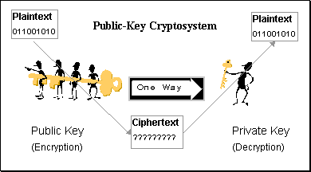

A Backdoor in a computer system, a crypto system or an algorithm, is any secret method of bypassing normal authentication or security controls. Backdoors may exist for a number of reasons, including by original design or from poor configuration. They may have been added by an authorized party to allow some legitimate access, or by an attacker for malicious reasons; but regardless of the motives for their existence, they create a vulnerability.
